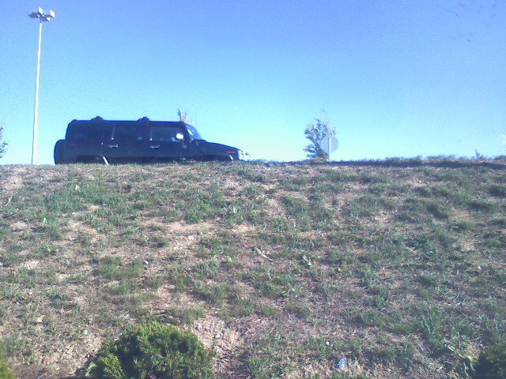
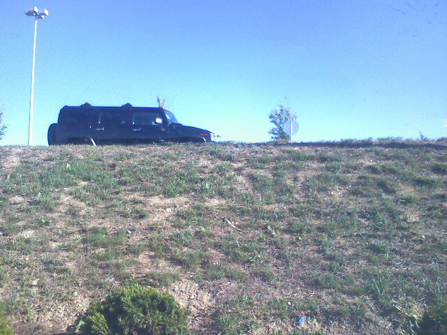
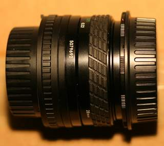
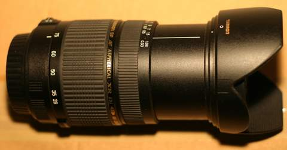
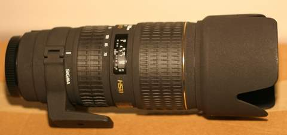
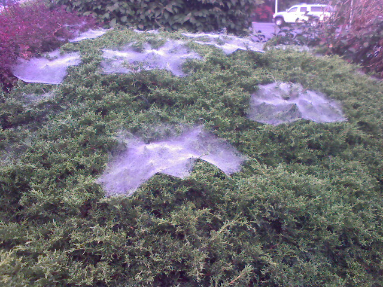
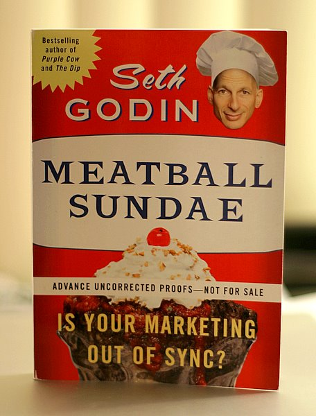

Humdinger On A Hill

Waiting in a parking lot that is below an embankment as a Hummer drives by. I thought the composition was neat.


Waiting in a parking lot that is below an embankment as a Hummer drives by. I thought the composition was neat.
The Internet seems love photos of seemingly normal things in a weird context. For example, take the tourist of death image that made its way around the Internet via e-mail a couple of years ago.

Many believed this photo was legitimate but according to online urban legend debunking site Snopes.com, there were too many physical and logistical errors with the image. Hence forth, the Internet began making mashups putting the tourist image into various other situations.
The pink shirt guy is the same sort of meme. Take a look at the original photo…
The scene looks rather serious and yet pink shirt guy breaks up the drama with his calm demeanor and smooth yet refreshing attire. No one seems to know who pink shirt guy is but it certainly has sparked a series of mashups with his image popping up in a variety of places.
HidePinkShirtGuy.com hopes to take the fad offline by providing various printable versions that people can use to hide in the real world. The site accepts submissions of the pink shirt guy blended into the real world with the best rated photos featured on the homepage. That’s about all there is to the site but it was mentioned on TechCrunch in a post about web 2.0 bubble indicators.
So like the site says, join the revolution by making your own pink shirt guy and hiding him somewhere in the real world.
It is officially fall and football games can be found taking place all over the country. Action photography can be a real challenge to capture in tack-sharp clarity due to the split-second timing and cat-like reactions necessary to freeze motion. Last year I photographed my girlfriends annual Turkey Bowl intramural flag football tournament. Coming home with a full gig and a half of photos was a thrill but there were quite a few technical problems I ran into.
For one, I only had one battery. The tournament goes all day from morning to night and I need all of the juice I can get. It also didn’t help that the battery was having trouble holding a charge on that cold, brisk day. I would constantly have to take the battery out and hold it in my pocket for a while before continuing to shoot. This year that problem will be solved since I bought two batteries in addition to the original battery which I keep in my bag for an absolute last resort, emergency type of shot.
My second problem was my beginner telephoto lens. Don’t get me wrong it got me some good shots, but it is a very soft lens with a slow aperture of f/5.6. No surprise I got this lens at a great price of $120. For this year’s game I upgraded to a Sigma 70-200mm f/2.8. The faster aperture will allow me to bump up the shutter speeds during the day and at night I will probably have to go with a 1600 ISO speed.
Finally, last year was the first time shooting team sports. I had no clue as to what I was doing and just went with my instincts. Recently I have been digging through resources on the Internet about shooting football which is how I ran into this great thread on DP Review.com.
Get low…. Not only does this go a long way in cleaning up the background but it makes the players (the younger the better) look bigger the life.
No matter what lens you are using shoot tight. Tight action shots give the viewer a feeling of being in the game.
Canon and the NFL have teamed up to produce a video series of football shooting tips with Sports Illustrated photographer Peter Read Miller. There is also a behind the scenes clip where Peter talks about the equipment he uses as well as events leading up to the game.
The New York Institute of Photography has a lengthy write up on football tips with several visual examples to drive their points home.
If you are in need of some inspiration there is a weekly sports thread in the DP Review.com Canon SLR Lens Forum full of all kinds of football shots. This one from BryanP particularly stand out. Bryan is the same guy who posted the excellent How To Shoot Football 101 thread.
I hope with the new gear and the reading I have been doing will pay off come game day on November 17th. I still have plenty of time to get some practice shots in and read up about more techniques.
Do you have any tips for shooting football?
This past month I have been going crazy with lenses for my Digital Rebel. Let us go through them one by one.
28mm f/2.8 Reverse Macro

This is more of a fun little toy than a serious lens. It is a Sigma 28mm f/2.8 that mounts backwards so the part that would normally be pointing out and away from your camera is pointing right into the sensor. This causes a large magnification effect in the area of 1.25x actual size. With this lens I will be able to take larger than life macro shots which is trickier than it appears.
In order to focus the front of the lens (really the back because it is reversed) needs to be one or two inches away from the subject. You can scratch bug photography with this lens off of my subject list. In addition to a close proximity to the subject, a lot of strong light needs to be available. I was using an old 200 watt A/C plug in to the wall light that I had laying around and it seemed to do a pretty good job.
The first instinct of a photographer is to seek out lenses with a large aperture (smaller number, f/2.8 is bigger than f/22). But with a reverse macro there is no real benefit to an f/2.8 aperture due to the paper thin depth of field. When taking some test macro shots I found using the largest aperture yielded the best results. The Sigma 28mm lens has an old Canon FD mount which means it has a physical aperture built right in. This gives me a good idea of what the depth of field will look like before I take the shot.
Here is a macro shot of the back of a dime.
Tamron 28-75mm f/2.8

This is my new walk around lens for general photography. Before this I was using the Canon 50mm f/1.8, mainly for its large aperture. I feel limited by a prime because I am stuck with a single focal length which dictates my composition choices. I tend to like to zoom in close to things in my images and the Tamron gives me a wide range of options. The large aperture is another favorable aspect which will come in handy for dimly lit scenes. If I am shooting indoors and it is really dim I may just revert back to the 50mm f/1.8 for the extra f/stop of light.
Most people in Internet forums seem to be uneasy about going with off brand lenses, but what really pushed me over the edge for this one is the ranting and raving about the sharpness. Every review I read clamored on about how sharp this lens was and how it went beyond their wildest expectations. And because it is not a Canon brand name lens it is significantly lower in price. How is that for a good deal?
As an added bonus, the Tamron 28-75mm lens lets me get real close physically to my subjects (though not as close as the reverse macro lens) so I can do some outdoor macro shots. Large aperture, extreme sharpness, and macro capabilities: I think this lens is a keeper.
Sigma 70-200mm f/2.8

Now we are on to the big one. This 70-200mm f/2.8 is meant for action photography. The large aperture allows for really high shutter speeds on bright sunny days so I can capture the clumps of grass that fly up from a football game or a chilling glance from a hawk just before swooping down on it’s next meal. What you can’t tell from the photo is this thing is big with a 77mm filter thread (circumference) and weighing in at 2.8 pounds. After a couple of hours with this thing on the front of my camera my arm begins to get sore. But it is all worth it to capture some great shots. This new telephoto is replacing my beginner telephoto lens, a Sigma 70-300mm f/4-f/5.6 (talk about slow).
As a bonus, the seller who sold the Sigma 70-200mm threw in a Sigma 28-70mm f/2.8 for free. The catch is it doesn’t work; when I attach the lens my camera won’t even power up. It just sits there like there is no battery even after checking the battery and checking other lenses. Weird.

I need to talk to Sigma to see about the possibility of getting it re-chipped to work with my Digital Rebel. Besides, I really like my Tamron version and see myself sticking with it. The Sigma 28-70mm will probably end up back on eBay in due time.
I now feel as though I have a complete lens collection. Sure there may be other great deals that tempt me but I think I have the resistance to turn them down. eBay can be a great place for deals, and all of these lens came from the online auction house for a lot less than it would cost to buy them new. My next step is to take some pictures that I can sell to counteract my case of lens fever.

I have always been struck by this painting of a business man hopping on a pogo stick with his briefcase in hand. Some days when I am walking from the metro to work I think “It would be so awesome to do this on a pogo stick, just like in the painting.” But then I would have to wear a suit everyday to heighten the outrageousness of the idea. People generally don’t expect suit-wearing, briefcase-toting business folk to be hopping down the street like a 12 year old kid. That’s what makes it interesting.
Of course most of my commute is spent underground in a train that has a premium on space and managing a pogo stick would be a big hassle. I guess if I ever get a job where I can walk the whole way to the office I will trade in my sneakers for some wing tips and a pin stripe suit to go along with my visual gag.
Prints of this painting are available at egoodwinart’s online art store.
My girlfriend was driving down the highway when she spotted a bright car with question marks all over it. As she passed by she whipped out her cell phone and snapped this photo.
For those unfamiliar it is Matthew Lesko, the question mark guy who is seen in TV commercials yelling about free money programs from the government. Check the YouTube clip below.

It rained last night leaving a nice dew on the spider webs outside of my apartment. It also cooled off a bit. Sweltering October days are not my cup of tea.
I got my hands on Seth Godin’s yet-to-be-released book titled Meatball Sundae. I was really impressed with what Godin had to say in his last book, The Dip, and I can’t wait to dive in to his latest work. According to Seth, Meatball Sundae is about “the internet and new marketing and the fourteen trends that change everything.” Sounds like every other book he has done. I’ll keep you posted once I get into it more.

*This was post was solely to make me feel special.
Richard Scary’s The Best Word Book Ever is a childhood classic. But as culture and political correctness change, so must the book. A guy went through his own 1963 version, page by page, noting the differences between the 1991 version of his kids and sharing side by side photos in a Flickr set. The changes are pretty much what you expect; adding a female character in a few places and including the father character in more family activities. My favorite is the airline scene which featured a “pretty stewardess” and “handsome pilot” in 1963.
Apparently the airlines were wild and crazy in the 1960’s.
Sitting in traffic just like everyone else. Except this car did look better than the rest of the other cars.

{kind=link}